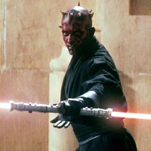

The Phantom Menace!!
Obi-Wan Kenobi (Ewan McGregor) is a young apprentice Jedi knight under the tutelage of Qui-Gon Jinn (Liam Neeson) ; Anakin Skywalker (Jake Lloyd), who will later father Luke Skywalker and become known as Darth Vader, is just a 9-year-old boy. When the Trade Federation cuts off all routes to the planet Naboo, Qui-Gon and Obi-Wan are assigned to settle the matter.

Attack Of The Clones!!
Set ten years after the events of "The Phantom Menace," the Republic continues to be mired in strife and chaos. A separatist movement encompassing hundreds of planets and powerful corporate alliances poses new threats to the galaxy that even the Jedi cannot stem. These moves, long planned by an as yet unrevealed and powerful force, lead to the beginning of the Clone Wars -- and the beginning of the end of the Republic.

Revenge Of The Sith!!!
It has been three years since the Clone Wars began. Jedi Master Obi-Wan Kenobi (Ewan McGregor) and Jedi Knight Anakin Skywalker (Hayden Christensen) rescue Chancellor Palpatine (Ian McDiarmid) from General Grievous, the commander of the droid armies, but Grievous escapes. Suspicions are raised within the Jedi Council concerning Chancellor Palpatine, with whom Anakin has formed a bond. Asked to spy on the chancellor, and full of bitterness toward the Jedi Council, Anakin embraces the Dark Side.